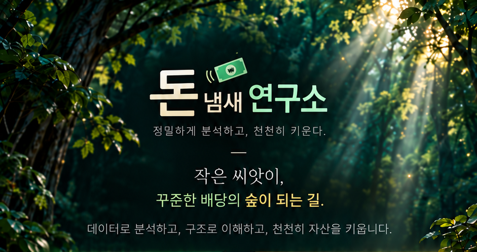
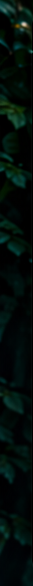
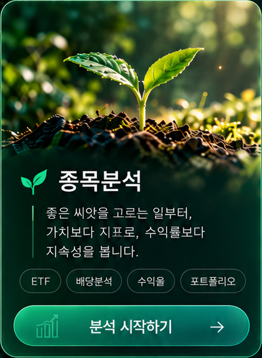
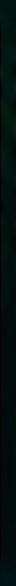
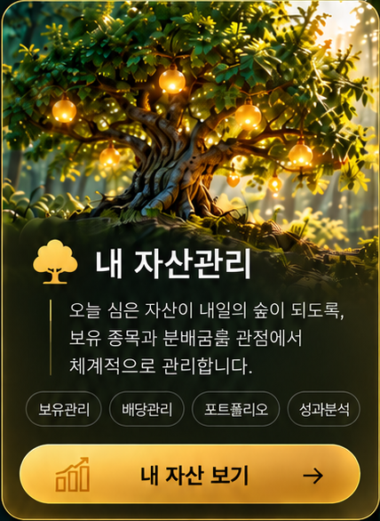
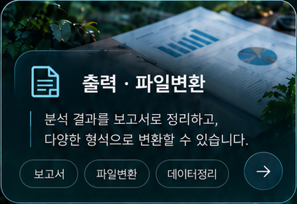

정밀하게 분석하고, 천천히 키운다. 작은 씨앗이, 꾸준한 배당의 숲이 되는 길. 데이터로 분석하고, 구조로 이해하고, 천천히 자산을 키웁니다.


좋은 씨앗을 고르는 일부터, 가치보다 지표로, 수익률보다 지속성을 봅니다.


오늘 심은 자산이 내일의 숲이 되도록, 보유 종목과 분배금흐름 관점에서 체계적으로 관리합니다.

분석 결과를 보고서로 정리하고, 다양한 형식으로 변환할 수 있습니다.

투자를 이해하는 자료실과 유용한 정보를 제공합니다.